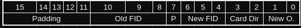

Lookup Tables
Three lookup tables have been created to assist with the development of this project: the adjacency list, the Face Orientation Table and the Relative to Cardinal Direction Table. This file will describe the format of the foTab and rcdTab.
Relative to Cardinal Direction Table
The Relative to Cardinal Direction Table is stored as a half-word array in the format:

- Padding is just bits that are not used for anything but allow the data structure to adhere to word half-word alignment.
- "Player Or." stands for Player Orientation, which is a value 0-3. More information can be found in the rotation docs.
- The 4 directional pairs are static and will always be in this pattern. You use this by translating the player's inputted direction, and those two bits will contain a number 0-3 that represents the corresponding cardinal direction.
rcdTab Subroutines
rcd: This subroutine takes in the current orientation of the character in r0 and the relative movement (wasd). It converts wasd into NSEW by using mulitple IT blocks to calculate the offset to load a byte into the rcdtab. It returns the absolute character that represents the direction the character is travelling in.
Face Orientation Table
The Face Orientation Table is a lookup table that stores what the player's new orientation will be when moving between faces. When moving from one face to another face, the player's orienation may change. This table will describe how it changes. The format is described below:

- Again, padding is just 0 bits that do not store data.
- New FID and Old FID are the face that the player is moving to and the face the player is moving from respectively.
- Cardinal direction represents the Cardinal direction needed to go from the current face onto the new face.
- Encoded for redundancies' sake.
- New O. represents the new orientation of the player. When moving from any face A to face B, the player may rotate their frame of view, depending on what faces A and B are. This is useful for when the board must be rotated.
fotab subroutines
new_o New Orientation takes in a cell as a CID in r0 and the direction of movement the character is going to travel in r1. It returns the new orientation of the character in r2. It uses the previously described face orientation table to determine what the new orientation will be. The given character in r1 must be n, s, e, or w or else the program will crash.
Utility Subroutines
extract_cid Extract Cell ID is a utility subroutine that takes in a cell ID and extracts it, using the inverse of the formula to create a CID - 100Face Number + 10Row Number + Column Number. So extract cid takes the cell ID and divides it by 100 and stores the quotient into r0. Then divide it by 10 and store it in r1. Finally, it stores the remainder in r2. Extract cid divides using the div_and_mod library subroutine.
dirindex Dirindex is a small subroutine that was written because the standard of representing direction as 0123 to nsew, nsew to 0123, wasd to 10, 11, 12, 13. It also converts 0x10, 0x11, 0x12, 0x13 to wasd. All it does is convert between the various standards. 0 -> e, 1 -> s, 2 -> n, 3 -> w. 0x10 -> a, 0x11 -> s, 0x12 -> w, 0x13 -> d. a -> 10, s -> 11, w -> 12, d -> 13. e -> 0, s -> 1, n -> 2, w -> 3
The relative direction conversions were not used in the final version.